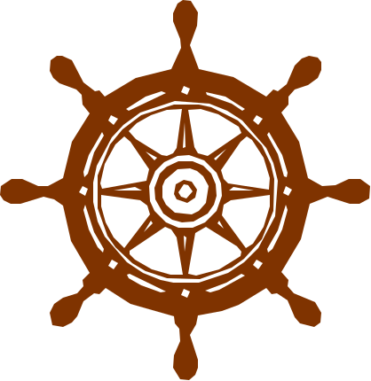

INTERACTIVE PHONE PREVIEW
Sailing playground
LIVE SIM
⬡ 1,250
HDG 000°
HULL
➤
WIND2.7
RUN SCORE000
N▲S
Drag the wheel to steer · Adjust sails to catch wind

+
SAILS
72%
0.0 speed · 0% rudder
LIVE TELEMETRY -- FPS
SHIP SPEED0.0lab units/s
HEADING000°north = 0°
WIND ALIGNMENT--tailwind +1 / headwind -1
ANCHOR STATERaisedFree to sail
Try reefing the sails before a hard turn.